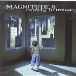

| Artist: | Magnitude 9 |
| Title: | Reality In Focus |
| Label: | InsideOut Music IOMCD 065 |
| Length(s): | 59 minutes |
| Year(s) of release: | 2000 |
| Month of review: | [04/2001] |
| 2) | What My Eyes Have Seen | 5.34 |
| 3) | Far Beyond Illusion | 5.39 |
| 4) | Afterlife | 9.11 |
| 6) | Lost Along The Way | 4.34 |
| 8) | Temples Of Gold | 6.24 |
| 9) | Quiet Desperation | 5.16 |
| 10) | Mind Over Fear | 7.32 |
What My Eyes Have Seen opens with sawing rhythm guitars and happily bouncing keyboards. Quite a contrast. The energetic progmetal that follows is again nice, but for me there is something lacking. The band seems to go through all the right (sometimes mandatory) moves, but there is a certain facelessness to it.
Far Beyond Illusion opens nicely again with plenty of bombast, but for the vocal part the music winds down, for me often a let down, unless a great vocal melody is waiting for me there. In this case, the vocal melody is not really special. The chorus however is the best and most memorable so far. On the other hand, I have trouble placing the swirling keyboardsolo within the composition. Not really functional.
The longest track on the album is Afterlife in which the drummer pounds and rumbles away. I have to admit liking his hardhitting style. The intermezzo has mostly meandering keyboards this time, going quite a bit over the top with the classically tinted runs. The final few minutes strike me as superfluous.
The End Of Days opens with classically styled riffs (think Malmsteen here) and the song continues to be quite pacey, but rhythmically more is happening. At the top of your voice vocals continue to ring out, and the baroque playing returns in the intermezzo. Lots of frills and fills.
Lost Along The Way starts with in a plodding fashion, with the now usual let-down of the vocal parts. Not a memorable track this one. Flight Of Icarus is a cover of the Iron Maiden track, with nice varied drumming.
The moody opening of Temples Of Gold is promising. In fact, the guitar work is quite tense and the drummer nicely builds up along. At the end of the build-up we get into quicker but also shallower waters. The tempo continues to be high, except for a small intermezzo where we hear some spoken material.
Quiet Desperation finds us almost at the end of the album. The band opens with something akin to bombastic film music, but soon we are back in progmetal. Plenty of variation here, the keyboardist trying to do a small chamber orchestra. The vocal part falls short again. To me the song sounds much like Malmsteen's You Don't Remember I'll Never Forget.
The final track then is Mind Over Fear, which opens atmospherically, but continues with fast harpsichordish keyboards. Very flashy. The vocal parts are much more relaxed. There is a ressemblance with the vocal melody of Far Beyond Illusion. The song ends flashy, except for the small pianic afterbirth.